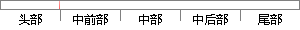

将引起异常指令的下一条地址保存到异常工作模式下的R14（LR）中，这样能使异常处理程序执行完后能返回原来的程序处继续向下执行指令。
片段位置图

相似结果
相似片段：3.将引起异常指令的下一条指令的地址保存到新的异常工作模式的R14即 R14mode中,使异常处理程序执行完后能正确返回原程序。 4.将程序计数器值(Pc)设置成该异常...
| 标题 | 《基于VxWorks的SoC协同设计与验证技术研究与应用》 |
| 对比库 | 中国学位论文全文数据库 |
| 作者 | 淮治华 |
| 机构 | 西北大学 |
| 分类 | 计算机系统结构 |
| 年份 | 2009 |
| 相似率 | 69.39% （轻度抄袭） |
※ 片段修改建议 ※
近似词参考：- 这样：如许
- 继续：连续 继承
- 执行：履行 实行
- 异常：非常 异样
- 程序：法式 步伐
- 原来：本来
- 处理：处置 处置惩罚
- 地址：地点
- 工作：事情
- 引起：引发
系统自动生成语句： 将引发非常指令的下一条地点保存到非常事情模式下的R14（LR）中，如许能使非常处置法式履行完后能返回本来的法式处连续向下履行指令。
注：本片段修改建议为系统自动生成，仅供参考。